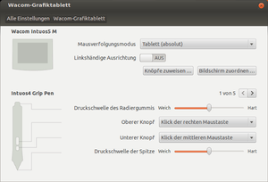

Wacom USB-Tabletts
Dieser Artikel wurde für die folgenden Ubuntu-Versionen getestet:
Ubuntu 14.04 Trusty Tahr
Zum Verständnis dieses Artikels sind folgende Seiten hilfreich:
Dieser Artikel beschreibt die Einrichtung von Treibern und Programmen zur Konfiguration für verschiedene USB-Grafiktabletts des Herstellers Wacom  . Auch TabletPCs, welche mit Hardware von Wacom ausgerüstet sind, sollten mit dieser Anleitung verwendbar gemacht werden können. Prinzipiell werden die älteren Modelle direkt von Ubuntu erkannt und können sofort verwendet werden. Nur für die neuen Modelle müssen Treiber aus externen Quellen installiert werden. Des Weiteren geht dieser Artikel im zweiten Teil auf die Konfiguration von Wacom-Tabletts ein.
. Auch TabletPCs, welche mit Hardware von Wacom ausgerüstet sind, sollten mit dieser Anleitung verwendbar gemacht werden können. Prinzipiell werden die älteren Modelle direkt von Ubuntu erkannt und können sofort verwendet werden. Nur für die neuen Modelle müssen Treiber aus externen Quellen installiert werden. Des Weiteren geht dieser Artikel im zweiten Teil auf die Konfiguration von Wacom-Tabletts ein.
Folgende Modelle werden derzeit laut der Projektseite  der Entwickler des Treibers unterstützt und funktionieren bei den aktuellen Ubuntu-Versionen direkt:
der Entwickler des Treibers unterstützt und funktionieren bei den aktuellen Ubuntu-Versionen direkt:
Bamboo, Bamboo1, & BambooFun (mit/ohne Touch)
Cintiq (4 und 5)
CintiqPartner
Graphire
Intuos 1, 2, 3 und 4
PenPartner
PL & DTF
TabletPC (mit/ohne Touch)
Volito series
Intuos 5 mit Touch (PTH-450, PTH-650, PTH-850)
Intuos 5 ohne Touch (PTK-650)
Bamboo Pen & Touch, Bamboo Pen, Bamboo Fun Pen & Touch (CTL-470K, CTH-470K, CTH-470S, CTH-670S)
Wireless-Kit für Bamboo (3. Gen.) und Intuos 5
Intuos Pen (CTL-480, CTL-680)
Intuos Pen & Touch (CTH-480, CTH-680)
Intuos Pro (PTH-451, PTH-651, PTH-851)
Hinweis:
Die Grafik-Tabletts der Modelle Intuos Draw (CTL-490, CTL-690), Intuos Art/Photo/Comic (CTH-490, CTH-690), werden wahrscheinlich erst ab Kernel 4.4 automatisch erkannt, der bei Ubuntu 16.04 LTS zum Einsatz kommt. Bei allen älteren Versionen hilft nur die manuelle Kompilierung neuerer Treiber.
Installation¶
In den meisten Fällen funktioniert das Tablett sofort, nachdem es an die USB-Schnittstelle angeschlossen wurde. Ist dies der Fall, kann man direkt mit der Konfiguration fortfahren.
Sollte es zu Problemen bei der Installation kommen, bitte help.ubuntu.com zum Thema "Wacom Latest Driver" beachten.
Manuelles Kompilieren¶
Um die neuste Generation der Grafiktabletts benutzen zu können, muss man die Treiber manuell kompilieren. Das wird in einem eigenen Artikel beschrieben: Wacom USB-Tabletts/Treiber kompilieren.

Konfiguration¶
Grafische Hilfsprogramme zum Wacom-Treiber¶
Konfiguration über die Systemeinstellungen¶
In den Systemeinstellungen von Ubuntu kann man das Wacom-Tablett direkt konfigurieren:
"Systemeinstellungen → Wacom-Grafiktablett"
Die Art der Einstellungen hängt vom Tablett ab. Je nach verwendetem Modell können sich die Einstellungen unterscheiden. Die nachfolgenden Einstellungen sollten in etwa bei jedem Modell vorhanden sein:
| Einstellung | ||
| Einstellung | Auswahl | Erklärung |
| "Mausverfolgung" | Tablett (absolut) | Das Grafiktablett entspricht dem Display. Setzt man den Stift in der linken oberen Ecke an, so ist auch die Maus in der linken oberen Ecke. |
| Tablett (relativ) | Die Maus wird beim Berühren des Tabletts nicht versetzt, sondern bewegt sich nur mit dem Stift mit, aber wird nicht an die Position des Stiftes gebracht. | |
| "Linkshändige Ausrichtung" | An/Aus | Damit für Linkshänder die Knöpfe nicht im Weg sind, kann das Tablett umgedreht werden und die Erkennung wird mit dieser Option umgekehrt. |
| "Knöpfe zuweisen..." | Pop-Up öffnet sich | Hier kann man den einzelnen Knöpfen Tasten der Tastatur zuordnen. Dies ist bei Grafikprogrammen wie z.B: GIMP sehr hilfreich. |
| "Bildschirm zuordnen..." | Pop-Up öffnet sich | Hier kann man festlegen, ob das Tablett nur auf einem Bildschirm, oder auf allen Desktops arbeiten soll. Dies ist sehr hilfreich, wenn man mehrere Bildschirme oder einen Beamer angeschlossen hat, die unterschiedliche Desktops anzeigen. |
| "Druckschwelle des Radiergummis" | Wert zwischen "weich und hart" | Hier kann man die Empfindlichkeit des Radiergummis einstellen (damit ist die andere Seite der Wacom-Stifte gemeint). Je härter der Stift eingestellt ist, desto mehr muss man aufs Tablett drücken, damit der Radiergummi oder eine andere Funktion eines Grafikprogramms reagiert. |
| "Oberer Knopf / Unterer Knopf" | Auswahl an Maustasten | Hier kann man die Knopfbelegung des Wacom-Stifts einstellen. Zur Auswahl stehen neben allen Knöpfen einer Maus auch die Möglichkeit "Zurück" oder "Vor" zu gehen. |
| "Druckschwelle der Spitze" | Wert zwischen "weich und hart" | Hier kann man die Empfindlichkeit der Druckspitze einstellen. Je härter der Stift eingestellt ist, desto mehr muss man aufs Tablett drücken, damit das Tablett reagiert. |
KDE Wacom-Tablett Einstellungen¶
Wenn man KDE statt Unity oder GNOME benutzt, dann bietet es sich an, das Tablett über die Systemeinstellungen von KDE zu konfigurieren. Dafür muss man zuerst das Paket kde-config-tablet installieren:
kde-config-tablet (universe)
 mit apturl
mit apturl
Paketliste zum Kopieren:
sudo apt-get install kde-config-tablet
sudo aptitude install kde-config-tablet
Nach der Installation kann man in den Systemeinstellungen im Bereich "Hardware → Eingabegräte → Grafik-Tablett" das Wacom-Tablett konfigurieren. Die Einstellungsmöglichkeiten sind mit denen der Wacom-Systemeinstellungen unter Unity/Gnome nahezu identisch.
Konfiguration auf der Kommandozeile¶
Möchte man ein Wacom-Grafiktablett über ein Terminal [3] einrichten, dann bietet sich hierfür der Befehl xsetwacom an. Im Terminal kann man die Optionen und die Bedienung von xsetwacom durch die Eingabe des Befehls
xsetwacom --help
einsehen. Prinzipiell können mit xsetwacom auch Informationen über die bekannten Geräte und ihre Eigenschaften angezeigt werden.
Die Einstellungen dieses Befehls sind nur für eine Sitzung gültig und werden bei einem Neustart wieder zurückgesetzt. Allerdings kann man, wie im folgenden Abschnitt beschrieben, Einstellungen auch automatisch vornehmen lassen. Dazu muss man einfach alle Zeilen, die man für die Wunschkonfiguration benötigt, in der Datei ~/.xinitrc ablegen (einfach mit einem Editor öffnen [4]). Weitere Möglichkeiten erläutert der Artikel Autostart. Der Inhalt sieht dann beispielsweise folgendermaßen aus (Einstellung für Linkshänder, die das Tablett um 180 Grad gedreht verwenden):
xsetwacom set stylus rotate HALF xsetwacom set eraser rotate HALF xsetwacom set touch rotate HALF
Auf diese Weise ist es möglich, eine Glättung der Zeigererkennung des Stylus zu erreichen, sodass dieser nicht mehr "zappelt", wie dies unter Windows bereits voreingestellt ist. Eine Anleitung dazu findet sich im Blogbeitrag Wacom Jitter Fix (for Linux) (01/2010).
Konfiguration nach Neustart erhalten¶
Falls man die Konfiguration über die Konsole getätigt hat und die Konfiguration auch nach einem Neustart noch verfügbar sein soll, dann sollte man anschließend den Befehl:
chmod +x ~/.xinitrc
ausführen, damit die eigene Konfiguration geladen wird und nicht die globale benutzt wird.
Um zu vermeiden, dass die Konfiguration bei Systemstart nun unendlich oft neu geladen wird, muss zudem noch die Datei /etc/X11/xinit/xinitrc in einem Editor mit Root-Rechten[5] geöffnet und dort alle Zeilen auskommentiert werden.
Problembehebung¶
Tasten lassen sich nicht über das GNOME Control Center konfigurieren¶
Falls die Tastenzuweisung über das GNOME Control Center nicht funktionieren sollte, hilft es mit Hilfe des dconf-Editors den Wert des Schlüsses "priority" im Schema org.gnome.settings-daemon.plugins.gsdwacom zu erhöhen. Danach sollte die Konfiguration wieder möglich sein.
Links¶
Linux Wacom Project
- Entwicklerseite des TreiberprojektsUbuntuforums.org
- Thread mit aktuellen Entwicklungenwacom manpage
- Erklärung der Xorg-Optionen für Wacom GrafiktablettsGrafiktabletts
 Übersichtsartikel
Übersichtsartikelhelp.ubuntu.com
- Wacom Latest Driver
- Erstellt mit Inyoka
-
 2004 – 2017 ubuntuusers.de • Einige Rechte vorbehalten
2004 – 2017 ubuntuusers.de • Einige Rechte vorbehalten
Lizenz • Kontakt • Datenschutz • Impressum • Serverstatus -
Serverhousing gespendet von